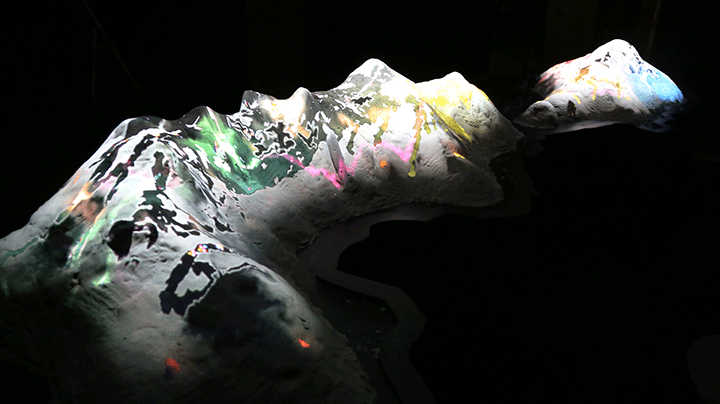
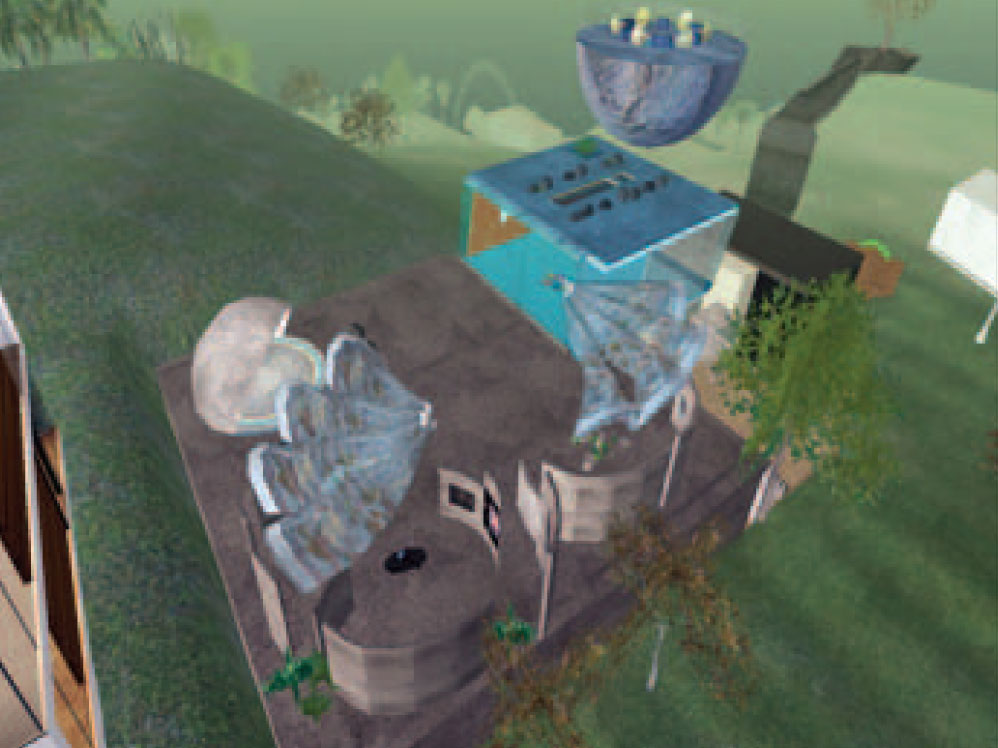
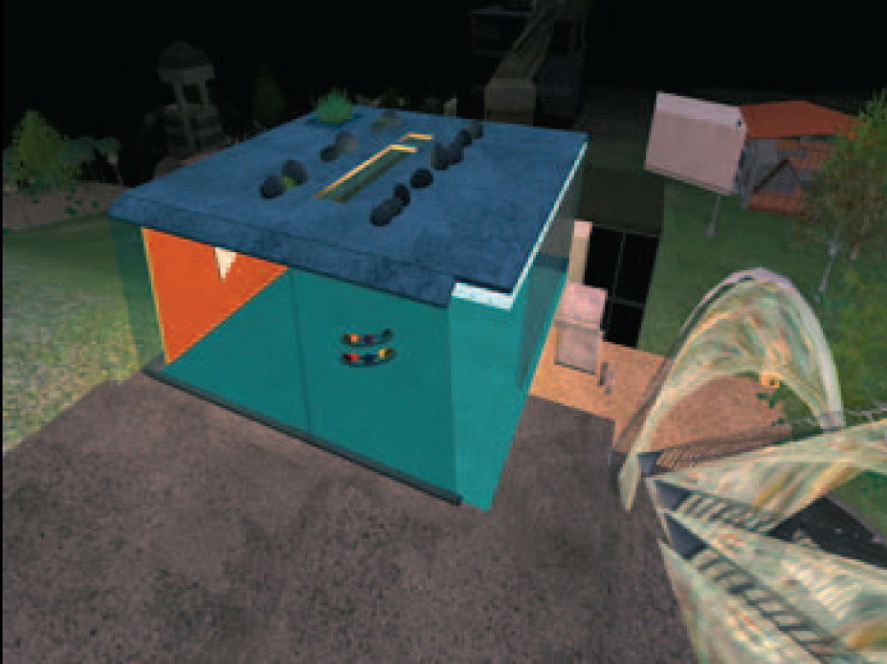
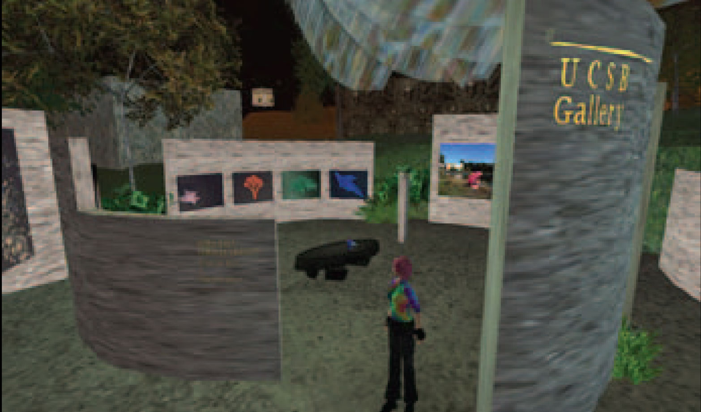
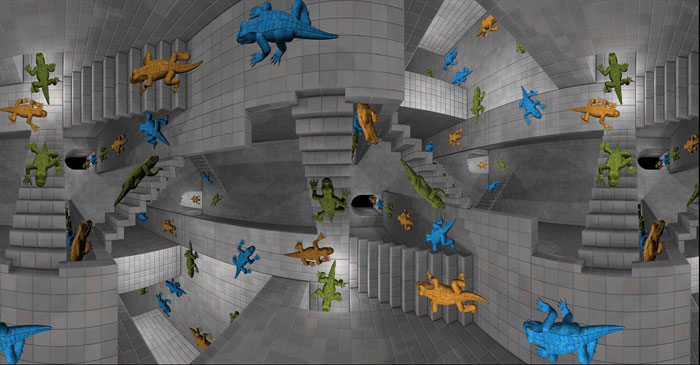
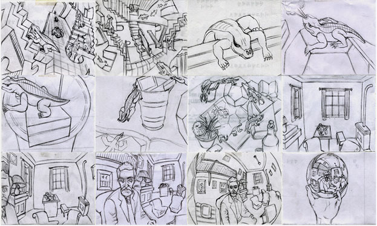

# Haru Ji
[Letter of Intent (PDF)](https://www.dropbox.com/s/nfqcjwh6pumzh5q/LetterOfIntent_HaruJi.pdf?dl=0)
[3D Research / Practice (online)]( index.html#tab-3d )
[Teaching Philosophy, Academic Innovation, and Teaching Evidence (PDF)](https://www.dropbox.com/s/p77dh6ygqif63tf/TeachingStatement_HaruJi.pdf?dl=0)
[Student Work (online)](#tab-students)
[Curriculum Vitae (PDF)](https://www.dropbox.com/s/jut587j98nom3md/CurriculumVitae_HaruJi.pdf?dl=0)
Samples of academic writing: [Recent conference paper (PDF)](https://goo.gl/Oqyf5f), [PhD dissertation (PDF)](http://goo.gl/23N6nn)
# 3D Practice & Research
## Artificial Nature: Endless Current
*Virtual reality (head mounted display or surround projection and sound), artificial ecosystem.*
Endless Current is a visualization of a complex biologically-inspired system. Through immersive display it presents an infinitely explorable world sustaining a virtual ecosystem of multiple species. These artificial life forms subsist within a simulated 3D fluid environment that is constrained by an amorphous landscape reminiscent of underwater or microscopic spaces. Immersed participants view virtual doubles of their hands and arms within this world, with which they can intuitively navigate the space and discover interactions with the simulated life.
**Exhibits:**
- [**HTC VivePort** virtual reality content distribution network.](https://www.viveport.com/apps/2905a17c-4835-409a-bfe5-f8d2a2f79f27) 2017-01-30 - present.
- SV+VS (Sonifying Visuals+Visualizing Sound). Gallery MUN, **Dongdaemun Design Plaza**, Seoul, Korea. 2016-08-20 - 2016-09-18 (Curated).
- [**Currents New Media Festival**.](https://currentsnewmedia.org/work/endless-current/) El Museo Cultural, and also the Digital Dome at the Institute of American Indian Arts, Santa Fe, USA. 2016-06-10 - 2016-06-26 (Juried).
- [**IEEE VIS** Arts Program.](http://visap.uic.edu/2015/artshow.html) LeRoy Neiman Center, School of the Art Institute of Chicago, USA. 2015-10-16 - 2015-10-30 (Juried).
- [Artience Project Daejeon.](https://www.facebook.com/ArtienceFestival) Korea Research Institute of Standards and Science, Daejeon, Korea. 2014-08-23 - 2014-09-02 (Curated).
- Life is very Beautiful. Yeulmaru Exhibition Hall, Yeosu, Korea. 2014-02-18 - 2014-04-06 (Curated).
- Life is very Beautiful. Space-K Gallery, KI Building, KAIST, Daejeon, Korea. 2013-10-10 - 2013-12-6 (Curated).
- Korea Electronics Show 2013. KINTEX Convention Center, Ilsan, Korea. 2013-10-07 - 2013-10-10 (Commissioned).

## Artificial Nature: Archipelago
*Sand, projection mapping, mixed reality, artificial ecosystem.*
Archipelago was one of five works awarded Honourable Mention in the Finished Project category of the [**VIDA 16.0 Art & Artificial Life competition**.](http://vida.fundaciontelefonica.com/en/portfolio/2-special-mentions/)
**Exhibits:**
- Seoul Sangsangryok Baljeonso (Power Station of Creativity). City Hall, Seoul, Korea.
2015-02-16 - 2015-02-27 (Invited re-exhibit).
- [Capitaine Futur.](https://gaite-lyrique.net/en/capitaine-futur-and-the-extraordinary-journey) **La Gaîté Lyrique, Paris**, France.
2014-10-08 - 2015-02-08 (Curated).
- Seoul Sangsangryok Baljeonso (Power Station of Creativity). **City Hall, Seoul**, Korea.
2014-10-01 - 2014-10-21 (Juried competition **1st prize, CAD ~$32,000**).
- Systems and Subversions. IDEA Space, Edith Kinney Gaylord Cornerstone Arts Center, Colorado Springs, USA.
2013-10-28 - 2013-11-5 (Curated).
## Artificial Nature: Time of Doubles / Flux
*Curved screen, mixed reality, artificial ecosystem.*
Time of Doubles is an immersive interactive art installation. It invites visitors to experience mirror existences of themselves taking upon new roles as sources of energy and kinetic disturbance within a perpetually changing virtual ecosystem, a uniquely created computational world. Visitors encounter their doubles in an immersive world through 3D depth cameras, a surround array of active loudspeakers, and projected images. This world displays some characteristics familiar from our own, but is populated by unfamiliar life forms singing, swimming, and breeding through sensitive motions of dark fluids. The visitors’ doubles are energy fields, which emanate myriad bright fluid particles, food sources to be eaten by the virtual organisms. Visitors see, hear, and feel how they are fed to unknown species in this virtual ecosystem. Without visitors, the world-fluid is filled with life seeds that cannot grow, but with human presence the populations explode into alien orchestras of evolutionary growth. Larger organisms hunt smaller ones, leaving physical residues and films behind as they pass, which constrain the fluid flows, and which can be sculpted by visitors’ doubles as they approach them.
**Exhibits:**
- [GLOBALE: Exo-Evolution. **Center for Art and Media (ZKM) Mediamuseum**, Karlsruhe, Germany.](http://zkm.de/en/event/2015/10/globale-exo-evolution)
2015-10-30 - 2016-02-28 (Curated).
- **SIGGRAPH ASIA Art Gallery**. Hong Kong Exhibition and Conference Centre, Hong Kong SAR.
2013-11-19 - 2013-11-22 (Juried).
*Presented in stereoscopic 3D.*
- **Microwave International New Media Festival**: Enigma. City Hall, Hong Kong.
2012-11-03 - 2012-11-25 (Curated).
- **7th Digital Art Festival Taipei** 2012: Artificial Nature. Songshan Cultural and Creative Park, Digital Art Center, Taipei, Taiwan.
2012-11-06 - 2012-11-25 (Curated).
- **Daejeon Biennale** 2012: Energy. Daejeon Museum of Art, Daejeon, Korea.
2012-09-19 - 2012-11-18 (Curated).
- Bits & Pieces. AlloSphere, California NanoSystems Institute, UCSB, USA.
2012-05-29 (Curated).
- Collider 04: Spectacle. Emily Davis Art Gallery, Myers School of Art, The University of Akron.
2012-03-19 - 2012-04-13 (Curated).
- Questionable Utility. TransLAB, California NanoSystems Institute, Santa Barbara, USA.
2011-06-09 (Juried).
*Presented in stereoscopic 3D.*
- Type:wall. **Seoul Olympic Museum of Art** (SOMA), Korea.
2011-03-31 - 2011-05-29 (Curated).
*Invited installation as one of five artworks under the theme of the architectural wall, incorporating sound, ice, breathing, shadows, and interaction.*
## Chronophotography / Chronosculpture
*Lenticular print, 3D print*
Exhibited at: *Media + Life: Sensorial Collaboration.* College of Art, Tokyo Polytechnic University, Tokyo, Japan.
2013-02-04 - 2013-02-07 (Curated).
This work reprises Étienne-Jules Marey's technique of chronophotography with its original biological motivation, and yet is entirely artificial. The subject is an artificial life form composed of segmented sections comparable to the class Chilopoda (centipedes), but with trifold symmetric limbs that undulate to propel the organism through a fluid medium. The resulting forms are a product of the organism morphology, the propulsive patterns of its limbs, its predatory macro-behavior, and the viscosity and currents of the fluid it is immersed in.
## Genetic Morphologies
*Generative/evolutionary 3D animation, print*
Exhibited at: *Cross-Reality: Traversed & Encompassed Vision.*
Arts & Information Center, College of Art, Tokyo Polytechnic University, Japan.
Feb 20-22 2012.
Genetic Morphology Study is an initial exploration into evolutionary algorithms; a guiding aesthetic prototype for evolving populations of organisms as visual and spatial expression. The intention is to create a biological boundary form between the mathematical and the organic: modular combinations of geometric primitives developed through genetic evolution within a sculptural animation of collective behaviors. Each organismʼs morphology consists of a number of helix and hypercube modules arranged with symmetries varying according to their individual genetic code. The collective behavior of the organism is influenced by its nearest neighbor and the attractions of two ʻstarsʼ. The simulation comprised five generations of fifty agents each, produced by modeling in Maya and programming in MEL (Maya Embedded Language).
## NanoMed
Art direction, modeling, and shader development for an immersive, navigable stereoscopic 3D model of human anatomy with simulations representing [nano-scale drug delivery](http://www.allosphere.ucsb.edu/html/research/nanomedicine.html). Showing in the [AlloSphere](http://www.allosphere.ucsb.edu), an immersive facility located in the California Nano Systems Institute (CNSI).
## Artificial Nature: City Life
*LED media facade 78 x 99 meters, animation.*
- Urban Organism: Triangle Screenscape. Seoul Square media facade. Seoul, Korea.
2011-10-11 - 2011-10-30 (Juried).
City Life (도시 생명) is a site-specific generative video for the Seoul Square venue - a media facade of 99x78m located in the heart of Seoul's cityscape. To express a 'world-as-it-could-be' in which city and artificial life coexist, it presents an biological analogue of a metropolis in which the subjects are not citizens, but the city buildings themselves.
The significant challenges of this venue include the vast size of the display, the very low resolution of pixels, and the fact that the office windows are often lit. The animation thus includes a population of virtual buildings, allowing a trompe l’oeil effect whereby the actual windows appear to be part of these virtual buildings, emphasized by the high contrast. The buildings represent a human element at a vast scale, but also animate in the form of growing and undulating life forms. Other alien organisms invade the space and consume these buildings, somewhat akin to Kaiju. A toon-shading rendering style is used to minimize the challenges of working at a low pixel resolution.
## Transforms
Transforms is a sculptural computer animation showing continuously shifting patterns of form and color in a virtual space. An initial set of simple spheres deforms into very complex organic forms by tornado-like forces. Like rocks, formed by a process of wind or rain, the shapes transform themselves under dynamic conditions. This change of form can be a dialog with nature by mathematical calculation. A particle is attached to each vertex of the surface. Using a dynamic field, these particles pull and change the location of vertices. Simultaneously, a noisy texture map animates according to key-framing. It is a part of the project named Suntithenai.



## UCSB Virtual Campus
*Virtual architecture, Second Life.*
Commission by the Transcriptions digital humanities lab to design and construct UCSB’s virtual campus in Second Life, including a classroom space, adjoining gallery/performance space, and community garden. Funded by a 2007 Instructional Improvement Grant, campus departments use the land for virtual academic instruction, conferences and field trips, as well as social events. Any individual with a free Second Life account can visit and use UCSB Lane.
## Emote
Emote is an emotional animal communication device with a human at its heart. This is a form of proposal as a digital sculpture.
- Concept, Modeling and Animation: Haru Ji
- Concept and Website: Alex Norman
## Sanctum
Sanctum is a virtual symbolic space based upon poetic, sculptural and visual concepts. In this world everything changes constantly: the skin of the goddess (symbolizing a Gaea-like goddess), globular particles inside of the goddess, babystones (sculptural objects), the shapes of doors, the moon, the sun, water and the camera movements.
## Airemin
Airemin is a USB musical interface that measures its distance from objects using infrared sensing. It is inspired by the desire to have a compact and easy-to-handle Theremin-like device. It can be played with the other hand or scanned against any other object, such as another performer. In addition the device has a thumb button on the top and a finger dial on the back. The device effectively gives the user two continuous control axes and a trigger to start/stop events.
- Device Design, 3D Modeling and Fabrication: Haru Ji
- Coding, Visual Music and Fabrication: Lance Putnam


## Reptiles (Digital Escher)
## My own prison
## Installation, Sculpture, and Print
# Student Work
### Introduction to 3D Modelling
*York University, 2015-2016. Lecture & studio/lab, 4 sections.*
This course is designed for students to learn both practical and theoretical knowledge in constructing and managing three-dimensional modeling and texturing data, with an emphasis on modelling used in 3D art, narrative media, and games. The course features weekly assignments and three projects to help students build problem-solving abilities toward the subject in an incremental way, and taking a creative approach to expressive 3D modeling and texturing.. Each class consists of one hour of lecture and two hours of lab practice. The level of the course covers beginner to intermediate modeling and shading. [Course notes](https://jiharu.github.io/datt2500/).
### Introduction to 3D Animation
*York University, 2016-2017. Lecture & studio/lab, 3 sections.*
This course provides a foundation in 3D animation using state of the art render time 3D modelling and animation software such as Maya, Blender, and 3DS Max. The course provides a survey of various animation techniques and approaches with an emphasis on animation for 3D art, narrative media, data visualization, and games. Topics include scene building, character animation, timeline based animation techniques, and the use of 3D graphics in simulation and visualization. For Winter 2017, it utilizes the motion capture (MoCap) system at the AMPD CineSpace Motion Media Studio to teach real-time motion capture, rigging, and animation of student-authored models.
### 3D Modelling Studio
*Sogang University, 2013-2016. Lecture & studio/lab. Taught in English.*
This course focuses on 3D character design and modeling for animation, game, and other 3D applications. Students are introduced to character design and modeling methods such as modeling with primitives, NURBS, polygons and subdivision surfaces, and methods for 3D print fabrication. During the class, we will broadly expand our subjects from modeling to shading, digital cinematography, and special effects in Maya.
### 3D Animation Practice & Theory
*Sogang University, 2013. Taught in English.*
The goal of this class is for students to learn both practical and theoretical knowledge in digital animation: theoretically, focusing on transition from traditional animation and practically, three-dimensional animation techniques.
### 3D Fabrication
*York University, 2016.*
[Modeling for 3D Fabrication](https://jiharu.github.io/visa3033/) is an art studio class to learn theoretical and practical knowledge in constructing and managing 3D solid modeling data, which can be processed later for 3D fabrication, and empower students' creative expression. The course takes a practice-based arts research approach to modeling for 3D fabrication, considered as an expressive medium rather than a tool. Students carry out interdisciplinary artistic research of innovative and exquisite 3D fabrication case studies to gain firm understanding and inspire new creative ideas. Based on this, students pursue further research and practice on how to use digital technologies to construct 3D models for 3D printing. The 3D software used in the class includes Meshlab, Meshmixer, 123D, Blender, Autodesk Maya and many more, to extend students’ art-based problem-solving abilities and support their unique 3D fabricated expression.
### Spatial Dynamics
*Sogang University, 2016. Lecture & studio/lab. Taught in Korean, course materials in English.*
Spatial dynamics is an art studio course which explores objects in space, and spaces of objects, in terms of formations, functions and temporal relations. Students learn through lectures, hands-on practice, and group critique, developing an understanding of material capacities and core principles in the construction of form and structure, using paper, clay, and other basic plaster materials. Working as individuals or in groups, while taking an interdisciplinary stance bridging roles of artist, designer, and engineer, students will define theoretical and creative challenges found in nature and art to produce three-dimensional artworks integrating object and space, light and surface, image and time, and form and function.
### Drawing
*Sogang University, 2013. Lecture & studio/lab. Taught in English (some critiques given in Korean)*
Drawing is an art studio course in which students develop basic skills to convey and articulate complex and abstract ideas and personal expression into visual forms. Students will learn the theoretical foundations of drawing as visual representation and communication through lectures, hands-on practice, and group critique. During the class, they will explore different materials, techniques, and themes, grounded in detailed observation and free imagination. For the final project, students will be encouraged to apply further contemporary experimentation responding to his/her own style.
### Drawing
*Hongik University, 2005*